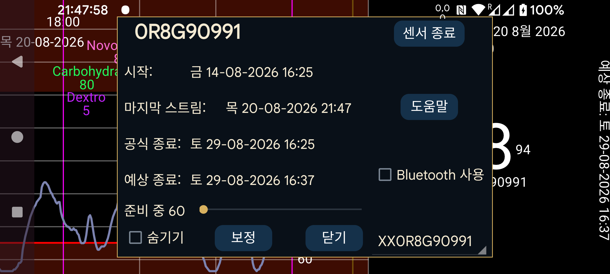

ar de es hi it ja ko nl pl ru tr uk uz en
Juggluco가 스트림 값의 미러로 Juggluco 동작할 때 센서 정보를 표시합니다:
시작: 센서를 시작한 시각입니다. Libre 센서에서는 첫 혈당값보다 한 시간 전입니다.
마지막 스캔: 센서를 마지막으로 스캔한 시각입니다. 센서 오류 또는 센서 교체 오류 때문에 데이터를 받지 못했더라도 센서를 스캔했다면 스캔으로 계산합니다.
마지막 스트림: Bluetooth로 받은 가장 최근 혈당 측정값의 타임스탬프입니다.
공식 종료: 센서 제조사가 지정한 종료 시각입니다.
예상 종료: 일부 센서는 실제로 공식 종료 시각보다 더 오래 작동합니다. Libre 1 및 2와 Dexcom G7/ONE+는 12시간 더, Sibionics 센서는 거의 10일 더 작동합니다. Libre 3 센서만 공식 종료 시각보다 더 오래 작동하지 않습니다.
숨기기: 선택하면 이 곡선을 숨깁니다. 선택을 해제하는 것 외에도 화면 오른쪽 아래의 “표시”를 눌러 다시 보이게 할 수 있습니다.
센서 종료: 이 센서에서 Bluetooth로 혈당값 받기를 중지합니다. 다시 사용하려면 센서를 다시 스캔해야 합니다.
Bluetooth 사용: 이 기기가 센서에 Bluetooth로 직접 연결하도록 합니다. 센서에 직접 연결할 기기를 바꾸는 데 사용할 수 있습니다. 이전에 직접 센서에 연결하던 다른 기기에서는 이 옵션을 꺼야 합니다. 또한 두 기기의 미러 설정을 변경하여 스트림 값이 반대 방향으로 전송되도록 해야 합니다. 반대쪽이 Wear OS 워치라면 한 버튼으로 설정할 수 있습니다: 왼쪽 메뉴→워치→Wear OS 설정→“센서 직접-워치 연결”.
여러 센서를 사용하는 경우 정보를 볼 센서를 선택할 수 있습니다.
보정: 왼쪽 메뉴→설정→보정에서 혈당 레이블을 지정하고 왼쪽 가운데 메뉴→새 입력값에서 제외되지 않은 혈당 측정값을 입력했다면 “보정” 버튼을 눌러 적용한 보정 목록을 볼 수 있습니다. 참조: https://www.juggluco.nl/Juggluco/index.html#calibration
준비 시간: Sibionics 및 Linx/Lumiflex/Aidex X 센서에서는 준비 기간의 분 수를 변경할 수 있습니다. 화면 곡선, 통계, 내보낸 데이터 및 웹 서버에 표시되는 데이터 등 모든 기능은 준비 기간의 데이터를 무시하며 이미 지난 데이터에도 소급 적용됩니다.